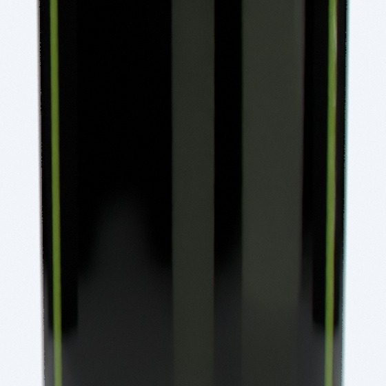
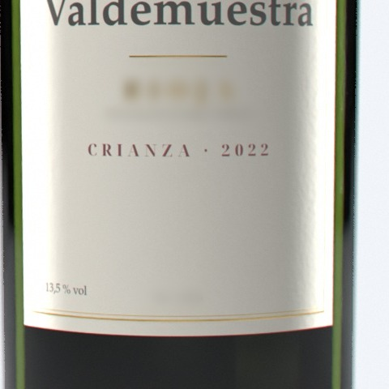
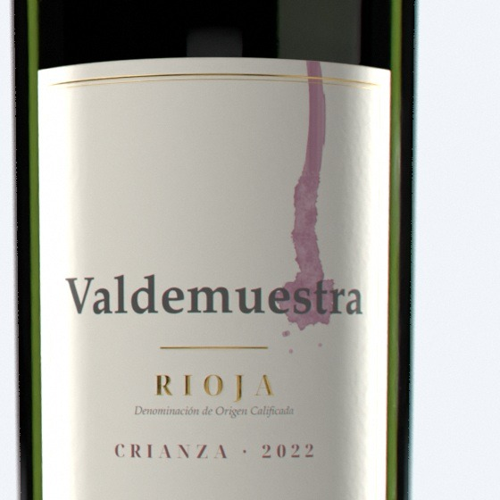
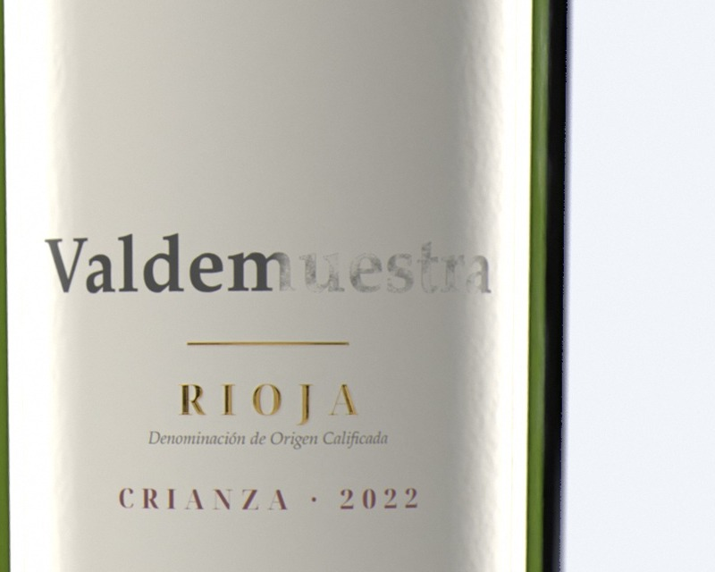
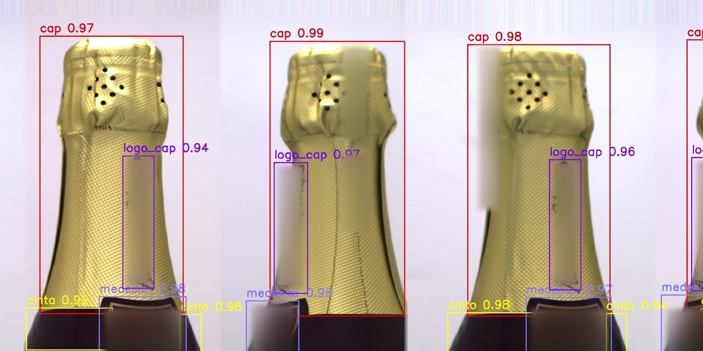
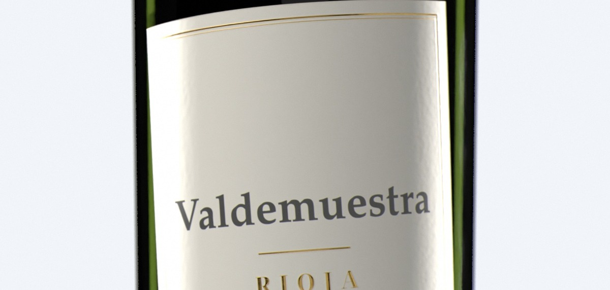

Thirteen labelling and finishing checks on every container
Four colour cameras see the entire container, without orientation, to detect label, capsule and code defects during production, including label integrity: logos, alcohol content and volume.

Lifted label

Double labelling

Label presence or absence

Inverted label

Label integrity

Tears, wrinkles and folds

Stains

Lithography defects

Capsule position and tilt

Label position and tilt
- Relative position between labels
- Barcode reading
- OCR marking